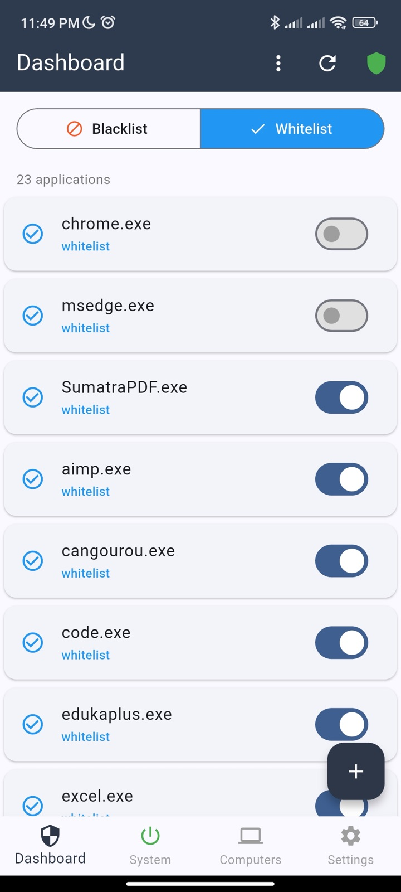
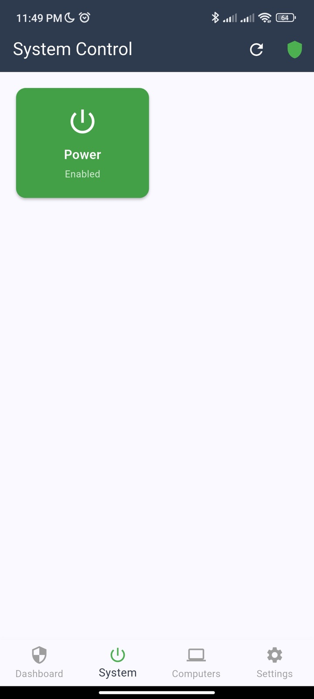
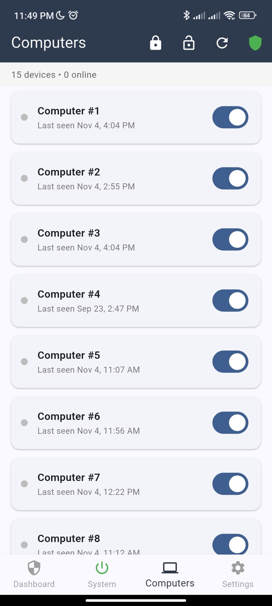
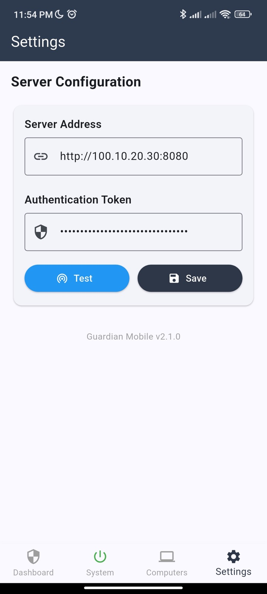

Allowlist or blocklist
Run blacklist to kill named apps, or whitelist to kill everything you didn't approve. System processes are always spared.

// Program control for school computers
Guardian decides which programs run on every computer of a class — Windows and Linux, managed by the teacher from one console. Set a profile per room; agents enforce it in under a second, even when the internet is down.
Live preview · agents kill blocked processes in <1s
// Video
Guardian 2.x on Windows, from unpacking the archive to the first blocked app. In Romanian; 3.0 installs differently.
// Capabilities
Run blacklist to kill named apps, or whitelist to kill everything you didn't approve. System processes are always spared.
Rooms, profiles, computers and accounts in one Windows window. Teachers switch their room's profile with one click; administrators manage everything.
The agent is told about every program start and closes a forbidden one within a second; a full check every 10 seconds catches anything missed.
If the server cannot be reached, the teacher's console switches a room's profile directly over the school network — encrypted, and only from known consoles. The server's profile returns when it is back.
Each room has its active profile, a computer can have its own exception, and teachers see only their rooms. Every change is in the audit log.
One server binary with embedded SQLite and TLS; agents for Windows (32 and 64 bit) and Linux. Run the server as a service or inside the teacher's console.
// The 2.x app
The 2.x Android app. Guardian 3.0 has no phone app yet; it comes back after 3.0, rewritten for the new server.

Switch between blacklist and whitelist and toggle each application with one tap.

One button turns enforcement on or off for the whole fleet.

Every registered machine with its last check-in; lock or release one, or all at once.

Point the app at your server, add the admin token, test the connection.
// Topology
The teacher sets the profile in the console. The server stores it and pushes it at once. Agents keep one encrypted connection and enforce it, also offline.
The teacher's window: rooms, profiles, computers, users — or the whole server, while it is open.
gRPC for consoles, WebSocket for agents, SQLite, TLS with a pinned certificate.
Applies the room's profile from boot, closes forbidden programs, and keeps the last profile when offline.
// Enforcement modes
Only processes on the block list are killed. Everything else runs freely. Good for banning specific apps.
Everything not on the allow list is killed — system processes excluded. Lockdown for kiosks and classrooms.
Nothing is closed. A room switches to it with one click; in fallback mode it cannot be chosen, so an outage never unlocks a room.
// Deploy
Everything ships in one release archive: server, console, setup and agents. Unpack, install, enroll.
Linux: sudo ./install.sh; Windows: a service, or just the console's built-in server.
cd server-linux
sudo ./install.shRun guardian-setup.exe on each PC with the code from the console's Connection info.
guardian-setup.exe install \
--server wss://srv:8443 --code K7QM-2XPWIn the console, give the room a profile — the computers follow it at once.
Sala 1 · Profile [Examen ▾]
12/14 onlineDownload the archive, start the server and enroll the class — Guardian takes it from there.